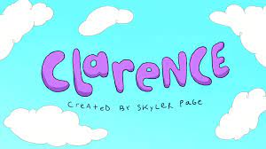

Clarence

- The show first aired on April 14, 2014 and ended on June 24, 2018.
- I used to watch it regularly since there is a replay that starts at around 4am until 6am, after a Chowder replay from 3am to 4am.
- The show is about the adventures of a fourth grader Clarence in Aberdale, which is a fictional version of Prescott.
- What I see in the show is a really similar story to how I acted when I was in fourth grade.
- I enjoyed watching Clarence due to the storyline or plot of each episode, the concepts that are explored in each episode, and how theu deal with said concepts.
I really felt it when he went sad boi